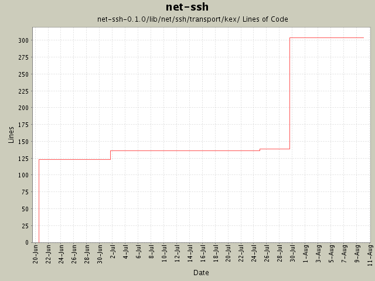

Summary Period: 2004-06-20 to 2004-08-10
[root]/net-ssh-0.1.0/lib/net/ssh/transport/kex

Total Lines Of Code:
304 (2005-01-07 15:12)
| Author | Changes | Lines of Code | Lines per Change |
|---|---|---|---|
| minam | 8 (100.0%) | 327 (100.0%) | 40.8 |
Changed buffer implementation and refactored it to a new module. Added
support for tunneling via HTTP proxy.
13 lines of code changed in:
Added support for the diffie-hellman-group-exchange-sha1 key exchange
algorithm, which is more secure than the diffie-hellman-group1-sha1
algorithm. Also fixed various TODOs in the kex stuff.
169 lines of code changed in:
First pass at creating SSH-specific exception classes, as recommended by
Daniel Hobe.
8 lines of code changed in:
Yay! Comments! Documentation!
13 lines of code changed in:
Began the tedious task of commenting the code. Also (finally) support the
ssh-dss server key type, although this depends on changes to Ruby's OpenSSL
module that have (at the time of this commit) not yet been formally accepted.
1 lines of code changed in:
Initial revision
123 lines of code changed in:
Generated by StatCVS 0.2.3